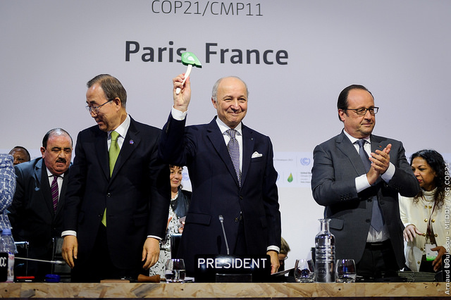

195 pays adoptent le premier accord universel sur le climat
Par Redac LTeaN, le 16 décembre 2015 à 14h19
 La Présidence française a présenté samedi 12 décembre à 11h30 son projet d’accord final aux représentants des 195 pays, lors d’une séance plénière chargée d’émotion et ponctuée d’applaudissements.
Le texte de compromis est « juste, durable, dynamique, équilibré et juridiquement contraignant », a déclaré le président la COP21, Laurent Fabius, la voix étranglée et au bord des larmes. « S’il est adopté, ce texte sera un tournant historique », a poursuivi Laurent Fabius, applaudi à plusieurs reprises par des délégués qui se sont levés pour le saluer, le président de la COP21 les remerciant, debout, la main sur le cœur. « Nous sommes presque au bout du chemin et sans doute au début d’un autre », a-t-il souligné, enjoignant aux pays de « ne pas laisser passer l’occasion unique qui s’offre à eux. Il les a invités à prendre connaissance du texte et à se retrouver à 15h45 pour l’adopter.
« Ce texte que nous avons construit ensemble constitue le meilleur équilibre possible, un équilibre à la fois puissant et délicat qui permettra à chaque délégation, à chaque pays de rentrer chez soi la tête haute et avec des acquis importants », a encore déclaré le président de la COP21.
Sur le fond, le projet confirme l’objectif « de contenir l’augmentation de la température moyenne bien en deçà de 2°C et de s’efforcer de limiter cette augmentation à 1,5°C, ce qui permettrait de réduire significativement les risques et les impacts liés au changement climatique », a précisé Laurent Fabius. Sur la question épineuse des financements, le texte prévoit que les 100 milliards de dollars promis chaque année par les pays du Nord pour aider ceux du Sud à financer leurs politiques climatiques soient « un plancher pour l’après 2020 ». « Un nouvel objectif chiffré devra être défini au plus tard en 2025 », a ajouté Laurent Fabius.
« Le succès est à portée de toutes nos mains réunies, vous allez dans cette salle décider d’un accord historique, le monde retient son souffle et il compte sur nous tous », a-t-il encore lancé. Un appel repris à la tribune par le secrétaire général de l’ONU Ban Ki-moon, qui a exhorté les pays à « finir le travail » en adoptant l’accord présenté.
Le président de la République François Hollande a enfoncé le clou, les appelant à franchir « le pas décisif » en adoptant dans la journée cet accord pour faire de ce « 12 décembre un jour non seulement historique mais une date pour l’humanité ». « La France vous demande, la France vous conjure d’adopter le premier accord universel de notre histoire », a encore lancé le chef de l’Etat français.
Le texte (en PDF, uniquement en anglais) a été mis en ligne à 13h30, le temps que la traduction dans les six langues onusiennes (français, anglais, chinois, arabe, russe, espagnol) soient faites. Les 196 parties doivent se retrouver en plénière du Comité de Paris à 15h45 avant l’adoption espérée de l’accord.

12

25

2